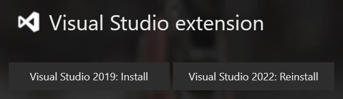
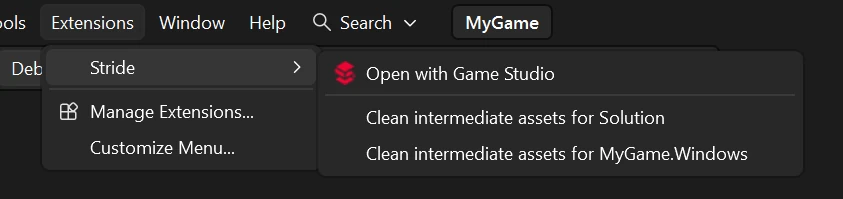

Stride Extension
Beginner
The Stride extension is an optional extension for IDEs that lets you edit shaders directly from your IDE.
It isn't needed for syntax highlighting in C#.
Installation
The extension can be installed via the launcher from the Visual Studio extension section.

Opening Game Studio from your IDE
You can open your project in Game Studio from Visual Studio by going to Extensions > Stride > Open with Game Studio.

Note
This feature is currently exclusive to Visual Studio.